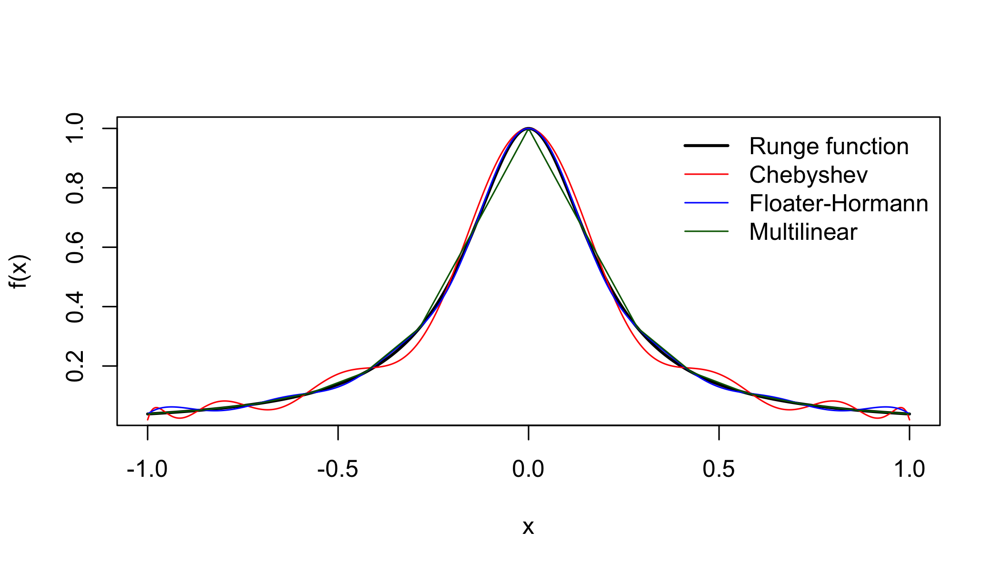

Overview
chebpol creates interpolating functions for multivariate functions, from values on a grid or at scattered points. All methods are available through a single function, ipol():
- Chebyshev interpolation on Chebyshev knots, and variants for uniform and arbitrary Cartesian grids
- Multilinear interpolation on Cartesian grids
- Floater-Hormann rational interpolation on Cartesian grids
- Shape-preserving stalker splines on Cartesian grids
- Polyharmonic splines and simplex linear interpolation for scattered data
The time-critical parts are written in C, and the interpolants evaluate many points in parallel.
This is a maintained fork of sgaure/chebpol by Simen Gaure, which is no longer on CRAN.
Installation
You can install the development version from GitHub with:
# install.packages("pak")
pak::pak("m-muecke/chebpol")The package compiles C code. FFTW and GSL are optional but recommended: FFTW speeds up Chebyshev interpolation, and GSL is needed for stalker splines on non-uniform grids.
Usage
ipol() takes a function, or its values on a grid, and returns an interpolating function.
library(chebpol)
# the Runge function, a classic hard case for polynomial interpolation
f <- function(x) 1 / (1 + 25 * x^2)
# interpolate on 15 Chebyshev knots, and on 15 uniformly spaced points
ch <- ipol(f, dims = 15, method = "chebyshev")
grid <- list(seq(-1, 1, length.out = 15))
fh <- ipol(f, grid = grid, method = "fh", k = 3)
ml <- ipol(f, grid = grid, method = "multilinear")
s <- seq(-1, 1, length.out = 400)
plot(s, f(s), type = "l", lwd = 2, xlab = "x", ylab = "f(x)")
lines(s, ch(s), col = "red")
lines(s, fh(s), col = "blue")
lines(s, ml(s), col = "darkgreen")
legend(
"topright",
legend = c("Runge function", "Chebyshev", "Floater-Hormann", "Multilinear"),
col = c("black", "red", "blue", "darkgreen"),
lwd = c(2, 1, 1, 1),
bty = "n"
)
The same interface works in several dimensions. Interpolants accept a single point or a matrix with one point per column.
g <- function(x) exp(-sum(x^2))
# 8 x 8 x 8 Chebyshev knots on [-1, 1]^3
ch <- ipol(g, dims = c(8, 8, 8), method = "chebyshev")
set.seed(1)
x <- matrix(runif(15, -1, 1), nrow = 3)
rbind(true = apply(x, 2, g), chebyshev = ch(x))
#> [,1] [,2] [,3] [,4] [,5]
#> true 0.7359564 0.1906404 0.3824911 0.2160185 0.6157615
#> chebyshev 0.7361133 0.1905714 0.3827403 0.2160025 0.6159808For scattered data, pass the points as columns of knots:
knots <- matrix(runif(600, -1, 1), nrow = 3)
ph <- ipol(g, knots = knots, k = 3, method = "polyharmonic")
rbind(true = apply(x, 2, g), polyharmonic = ph(x))
#> [,1] [,2] [,3] [,4] [,5]
#> true 0.7359564 0.1906404 0.3824911 0.2160185 0.6157615
#> polyharmonic 0.7354281 0.1929808 0.3825594 0.2121495 0.6158110See vignette("chebpol") for the methods and vignette("stalker") for the stalker splines.